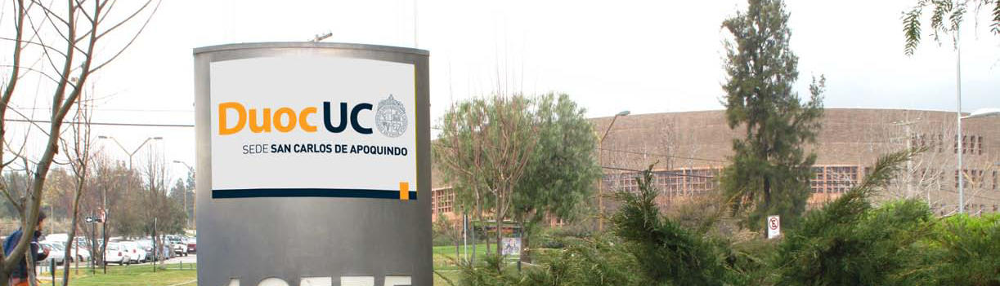

Sedes / San Carlos de Apoquindo



Descripción
Con una ubicación privilegiada por una hermosa vista sobre la gran ciudad de Santiago se levanta, al pie de la Cordillera de Los Andes, la sede San Carlos de Apoquindo de Duoc UC. En un edificio construido, con características arquitectónicas singulares, que respetan plenamente su entorno, esta sede dispone de 16.348 m2 de instalaciones especialmente diseñadas para el mejor aprendizaje de las comunicaciones, entre las cuales se destaca el Centro de Producción Audiovisual, considerado uno de los más avanzados complejos de entrenamiento en tecnologías de la comunicación de Latinoamérica. Con una población estudiantil de 5.332 alumnos y 138 profesores, esta sede se orienta a formar profesionales para la industria publicitaria y los medios de comunicación audiovisuales. P: Presenciales PEV: Programa Ejecutivo Vespertino
Carreras que se imparten
Comunicación
Actuación (Diurno)Animación Digital (Diurno)
Comunicación Audiovisual (Diurno)
Ingeniería en Sonido (Diurno)
Publicidad (Diurno)
Relaciones Públicas Mención Marketing (Diurno)
Técnico Audiovisual (Diurno)
Tecnología en Sonido (Diurno)
Diseño
Diseño de Ambientes (Diurno)Diseño de Vestuario (Diurno)
Diseño Gráfico (Diurno)
Diseño Industrial (Diurno)
Ilustración Digital (Diurno)
Técnico en Diseño Gráfico (Diurno)
Turismo
Ecoturismo (Diurno)Gastronomía Internacional (Diurno/Vespertino)